REPUTATION
录取 Offer 与案例
查看已公开的脱敏录取文件及申请背景。
OFFER WALL
录取 Offer 展示墙
以下为已公开的脱敏录取材料。点击查看录取文件。
 哥伦比亚大学MS in Operations Research
录取 · 2026 年秋季
哥伦比亚大学MS in Operations Research
录取 · 2026 年秋季
 伦敦政治经济学院MSc in Data Science
有条件录取 · 2026 年 9 月
伦敦政治经济学院MSc in Data Science
有条件录取 · 2026 年 9 月
 牛津大学MSc in Mathematical Sciences
有条件录取 · 2026 年 10 月
牛津大学MSc in Mathematical Sciences
有条件录取 · 2026 年 10 月
 南洋理工大学MSc in Biomedical Data Science
有条件录取 · 2026 年 8 月
南洋理工大学MSc in Biomedical Data Science
有条件录取 · 2026 年 8 月

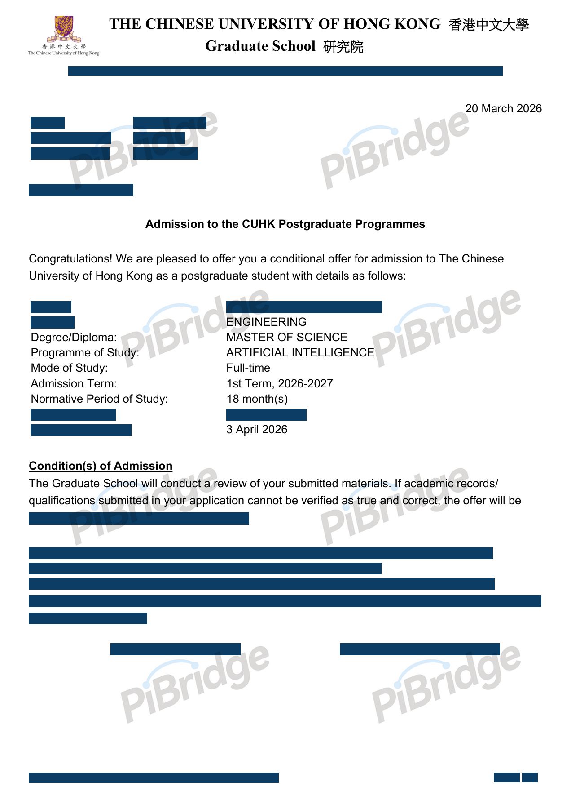
香港中文大学MSc in Artificial Intelligence 有条件录取 · 2026/27 第一学期 香港中文大学MSc in Artificial Intelligence for Science
有条件录取 · 2026/27 第一学期
香港中文大学MSc in Artificial Intelligence for Science
有条件录取 · 2026/27 第一学期

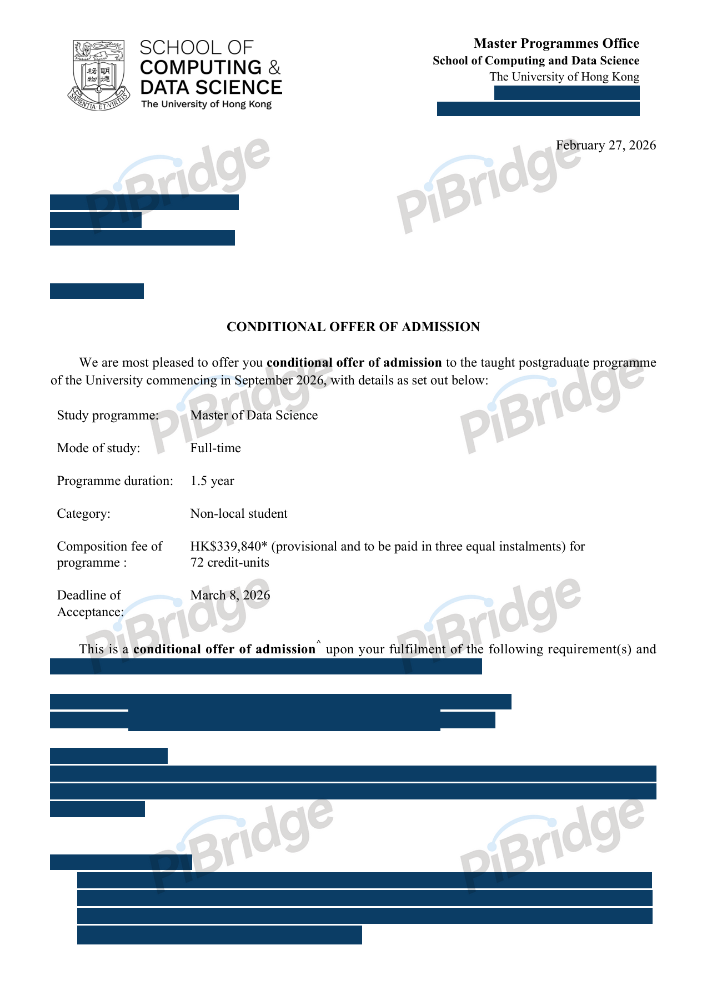
香港大学Master of Data Science 有条件录取 · 2026 年 9 月 香港大学MSc in Computer Science (General Stream)
有条件录取 · 2026 年 9 月
香港大学MSc in Computer Science (General Stream)
有条件录取 · 2026 年 9 月

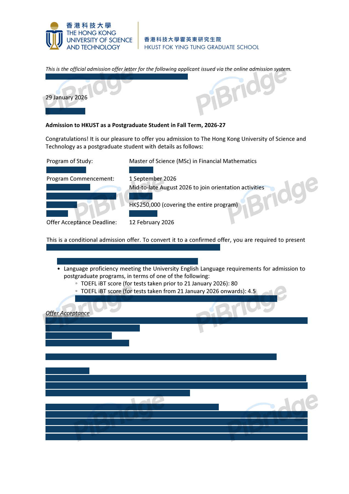
香港科技大学MSc in Financial Mathematics 有条件录取 · 2026 年 9 月 南洋理工大学MSc in Artificial Intelligence in Medicine
有条件录取 · 2026 年 8 月
南洋理工大学MSc in Artificial Intelligence in Medicine
有条件录取 · 2026 年 8 月
 南洋理工大学MSc in Signal Processing & Machine Learning
有条件录取 · 2026 年 8 月
南洋理工大学MSc in Signal Processing & Machine Learning
有条件录取 · 2026 年 8 月
 香港中文大学MSc in Risk Management Science and Data Analytics
有条件录取 · 2026/27 第一学期
香港中文大学MSc in Risk Management Science and Data Analytics
有条件录取 · 2026/27 第一学期

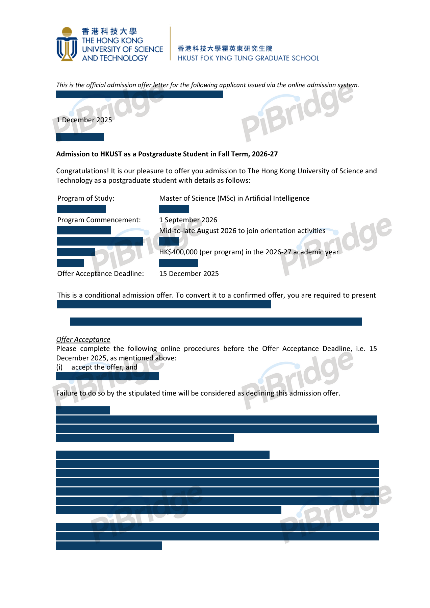
香港科技大学MSc in Artificial Intelligence 有条件录取 · 2026 年 9 月 香港科技大学MSc in Information and Cyber Security Management
有条件录取 · 2026 年 8 月
香港科技大学MSc in Information and Cyber Security Management
有条件录取 · 2026 年 8 月

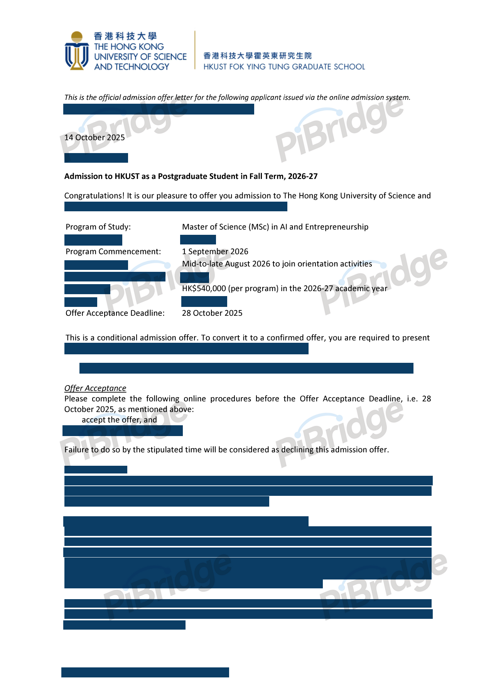
香港科技大学MSc in AI and Entrepreneurship 有条件录取 · 2026 年 9 月 爱丁堡大学MSc Data Science
有条件录取 · 2026 年 9 月
爱丁堡大学MSc Data Science
有条件录取 · 2026 年 9 月

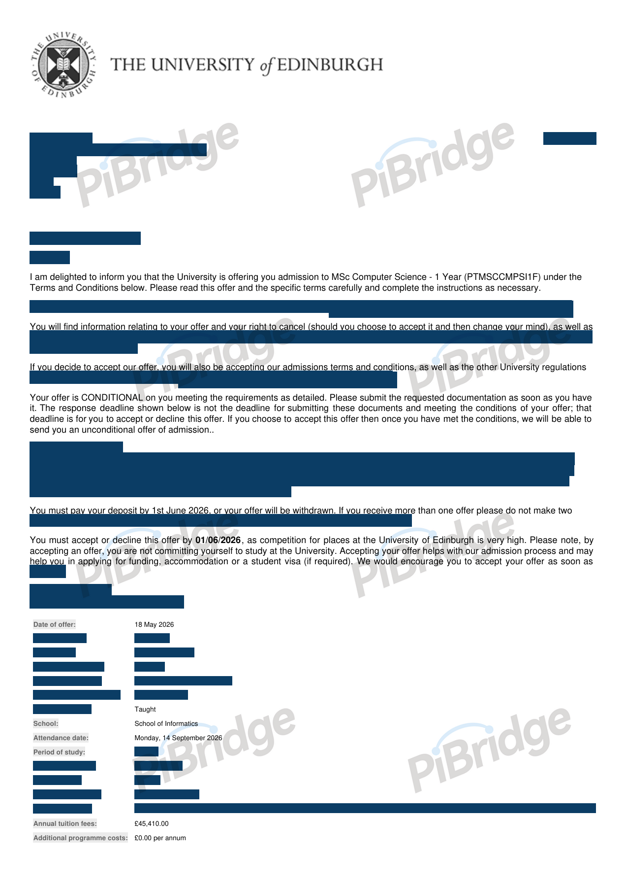
爱丁堡大学MSc Computer Science 有条件录取 · 2026 年 9 月
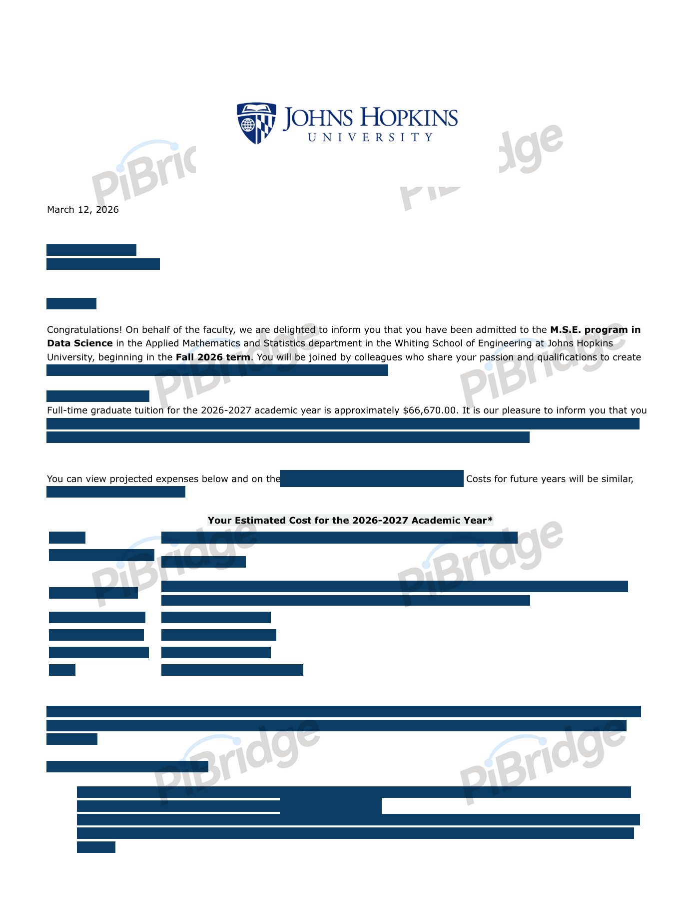
约翰斯·霍普金斯大学MSE in Data Science 录取 · 2026 年秋季
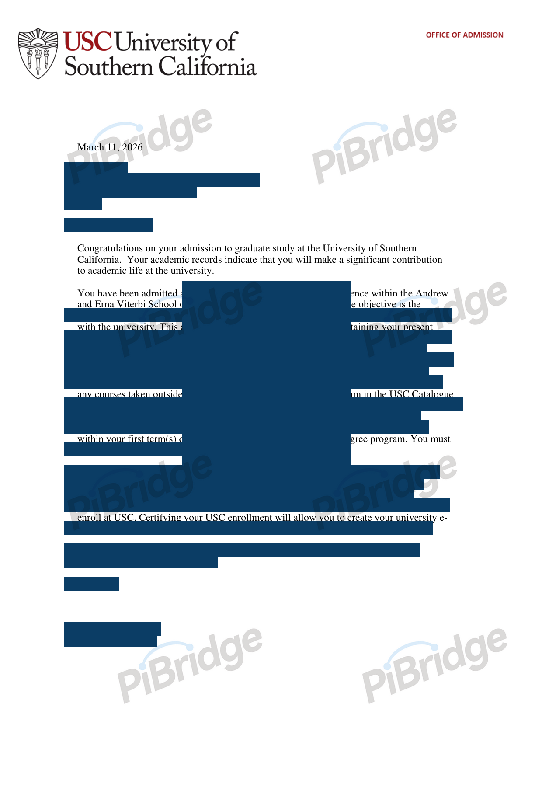
南加州大学MS in Applied Data Science 录取 · 2026 年秋季
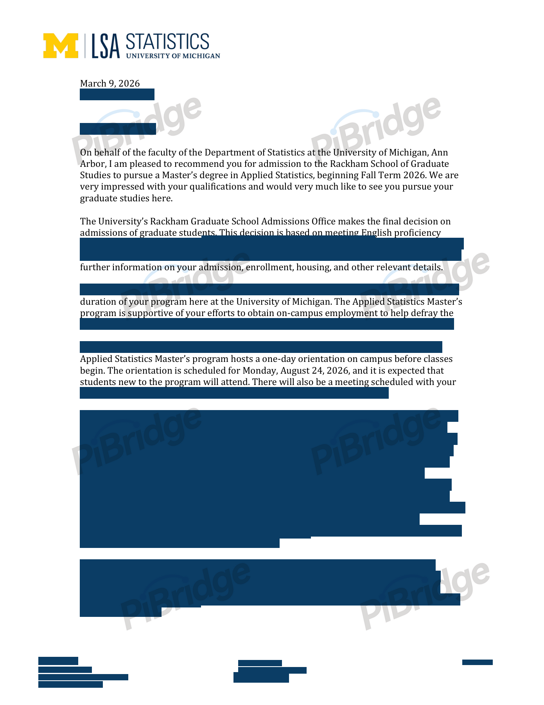
密歇根大学安娜堡分校Master’s in Applied Statistics 院系推荐录取，待校方最终决定 · 2026 年秋季
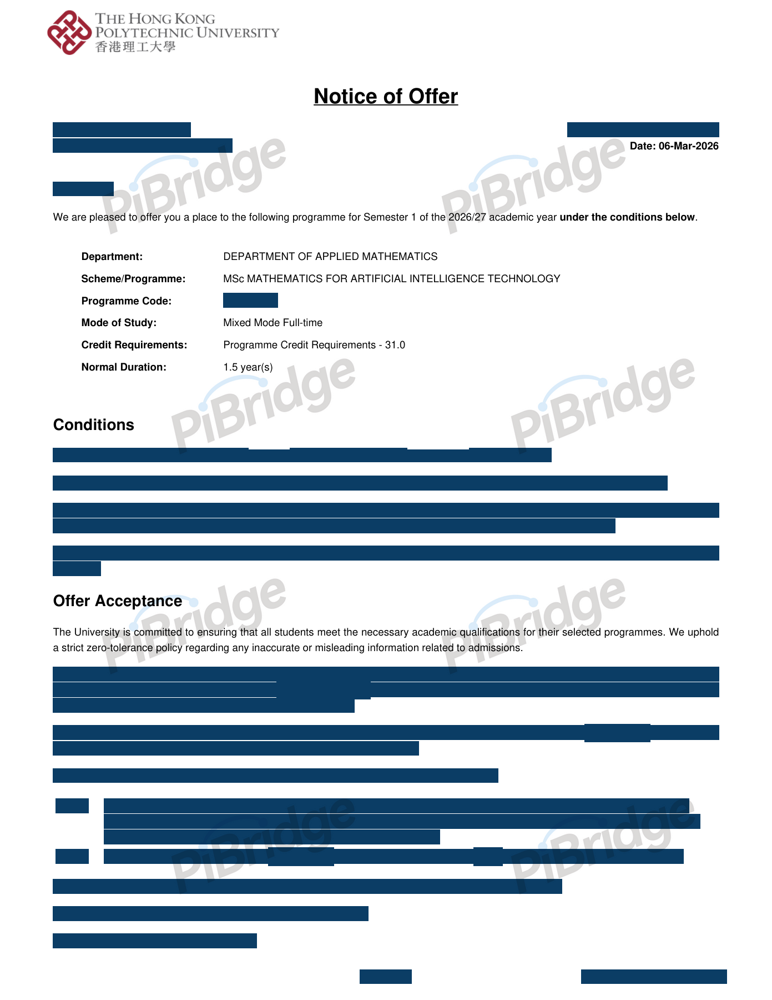
香港理工大学MSc in Mathematics for Artificial Intelligence Technology 有条件录取 · 2026/27 第一学期
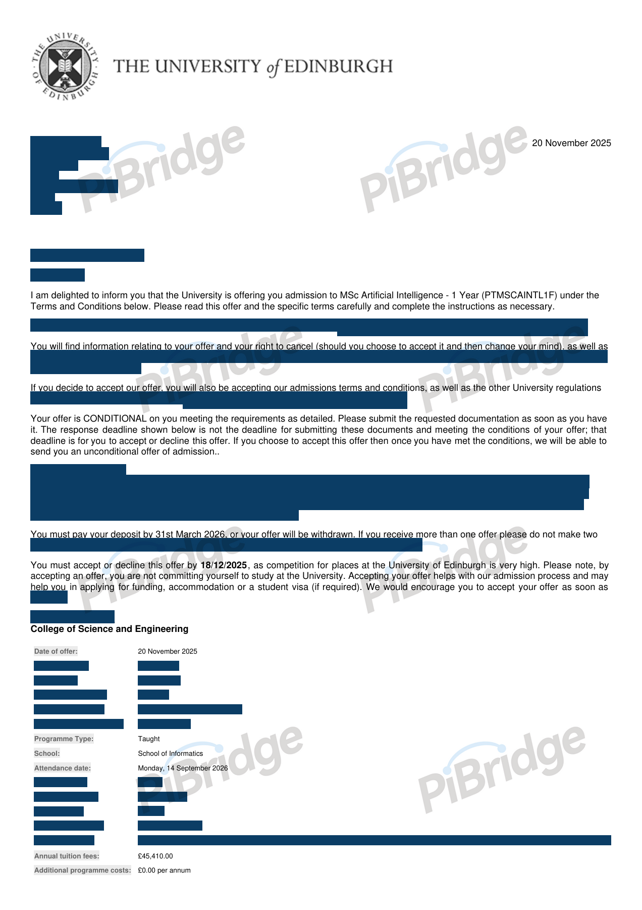
爱丁堡大学MSc Artificial Intelligence 有条件录取 · 2026 年 9 月 香港理工大学MSc in Quantitative Finance & FinTech
录取 · 2025/26 第一学期
香港理工大学MSc in Quantitative Finance & FinTech
录取 · 2025/26 第一学期

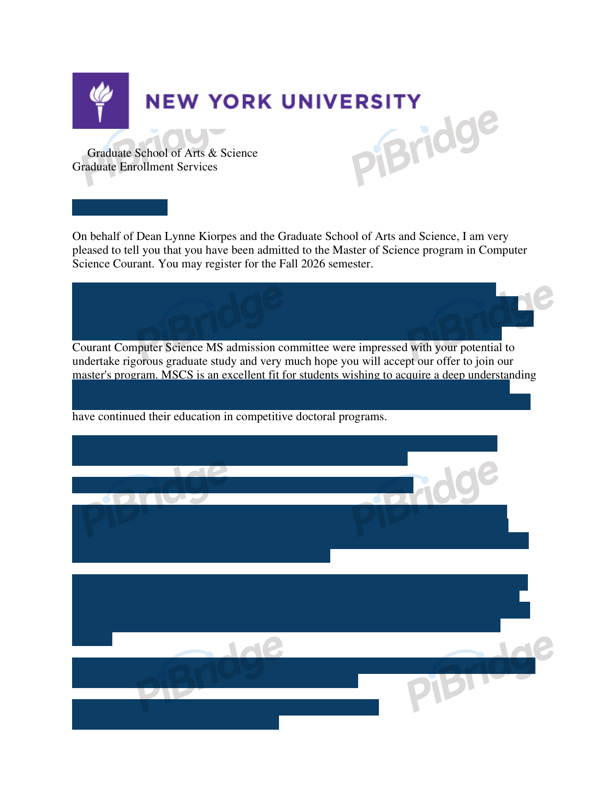
纽约大学MS in Computer Science (Courant) 录取 · 2026 年秋季ADMISSION CASES
学生原院校与录取去向
展示录取材料中明确写明的原院校。
UNIVERSITIES
院校与录取项目
汇总已公开的 24 份录取材料，涵盖 13 所院校。点击项目查看对应 Offer。
| 院校 | 项目 |
|---|---|
| 哥伦比亚大学 | |
| 伦敦政治经济学院 | |
| 牛津大学 | |
| 南洋理工大学 | |
| 香港中文大学 | |
| 香港大学 | |
| 香港科技大学 | |
| 爱丁堡大学 | |
| 约翰斯·霍普金斯大学 | |
| 南加州大学 | |
| 密歇根大学安娜堡分校 |
|
| 香港理工大学 | |
| 纽约大学 |